This is the first step in order to use all the resources from umIT. The project file is a .mat file that contains a Protocol object. This object contains a database with the list of subjects and aquisitions as well as the recordings' meta data.
The Protocol object uses a function (named protocol function) that scans the content of the raw directory containing the imaging recordings to create and update the database. The function protocolFcn_template.m is an example of protocol function that can be used as a starting point to create your own.
Note
The project file can only handle experiment files that inside one folder. For instance, if you have data across multiple hard drives, you will need to create one project file per location.
The data used in our tutorials consists of widefield imaging of calcium signals from the mouse cortex acquired with LabeoTech's modular optical imaging system. The project consists of longitudinal recordings of a cohort of mice expressing GCaMP6 in cortical excitatory neurons1 under distinct experimental protocols. Thus, the project file will contain a series of subjects (i.e. mice) with each mouse having a series of different acquisitions over time.
The raw data of each recording consists of a series of binary files located in a folder. The folder name contains the identifiers of the mouse and the acquisition as:
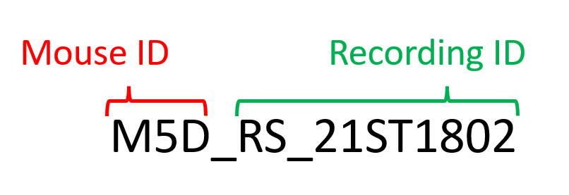
In our example, all recording folders are located under one main folder as:
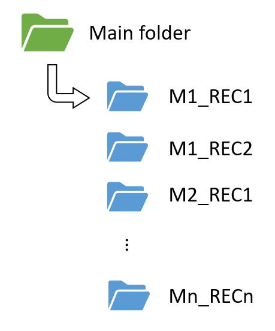
In the section below, we will show you how to create a project file using the protocolFcn_template function that was designed to read the data organized as mentioned above.
Important
Regardless if you are using the function protocolFcn_template or your own, it is advisable to move it to main folder where the raw data is. The toolbox will automatically add this folder to Matlab's path when using the umIToolbox app. Otherwise, be sure to have it in Matlab's path before using the toolbox.
Also, if you are using the protocolFcn_template, don't forget to rename it (the file and the function name in the code) to avoid duplicates in Matlab's path.
To open the main graphical user interface (GUI) type in Matlab's command window:
umIToolbox;
The GUI content will be hidden and the following message is displayed:
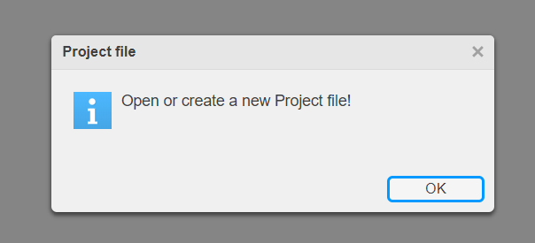On the main menu, select Project >> New:
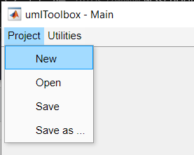Type the name of the project. The project .mat file will have the same name.
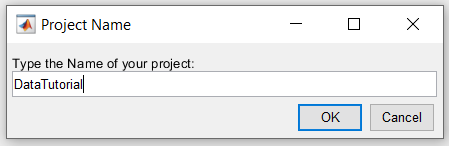Select the main folder. This is the folder where the raw data are stored.
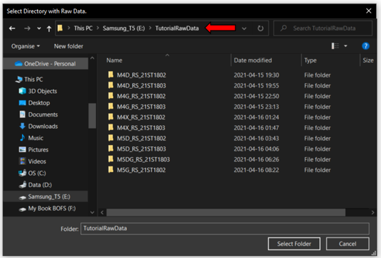Create and select the save folder where all imported and transformed data will be stored.
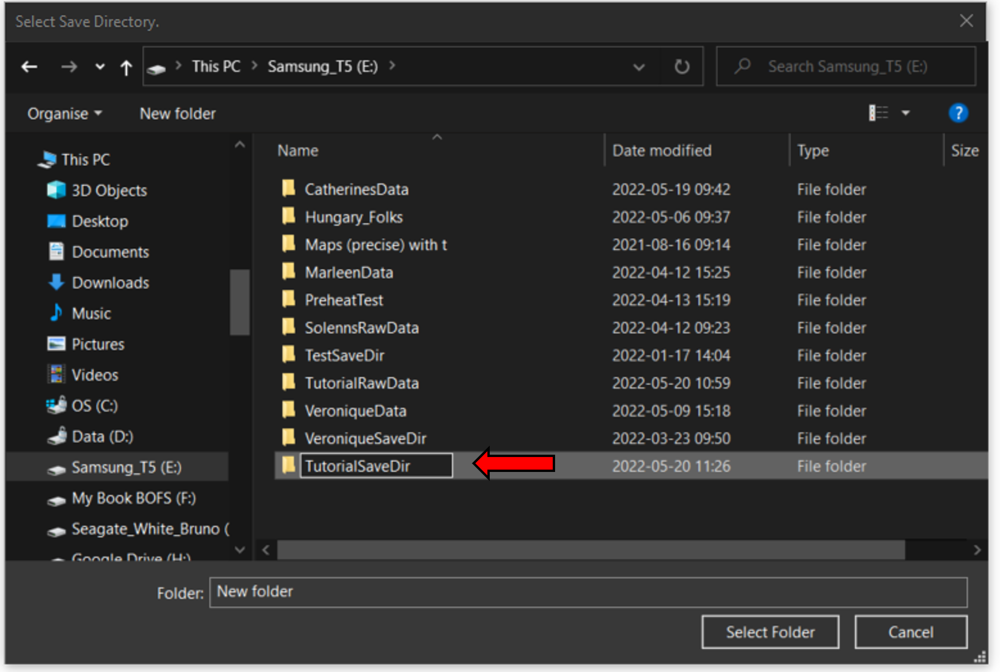Select the protocol function that will read the data in the main folder.
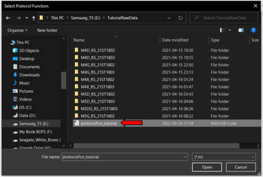Now, the toolbox will use the protocol function to read the data in the main folder and it will create subfolders in the save folder as:
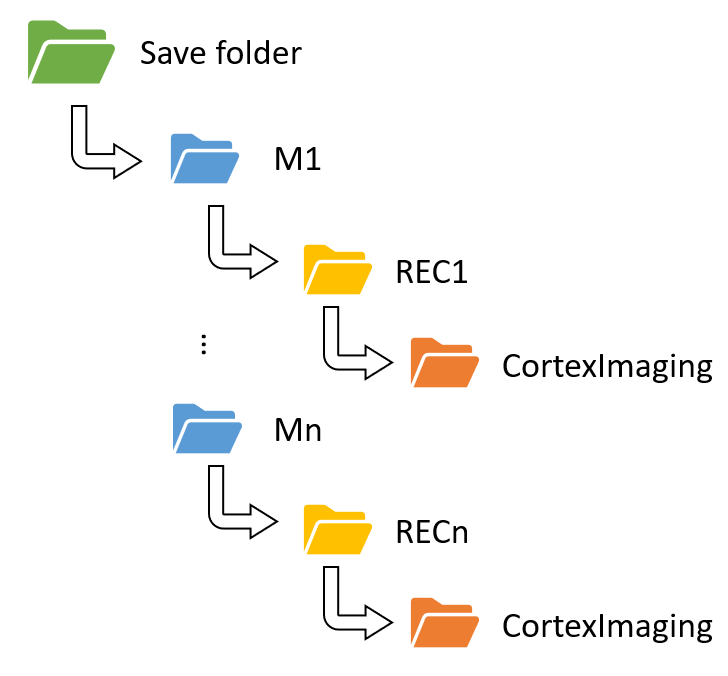
Once the project file is created, the following message is displayed:
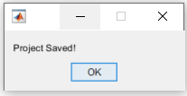Note
The project .mat file is automatically saved in the save folder with name PROJECTNAME.mat.
Now, the GUI can be used to explore the project's data!
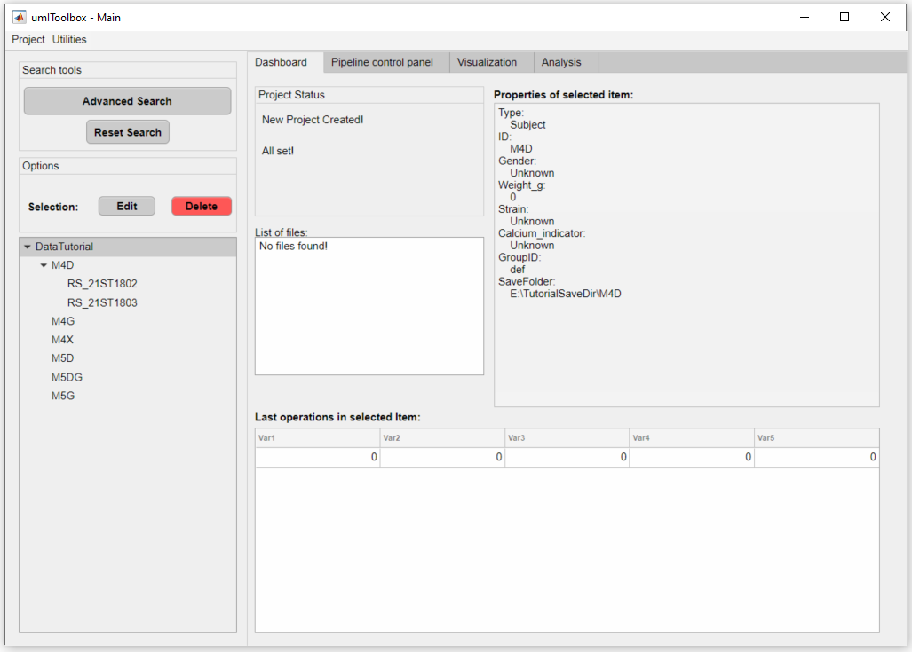